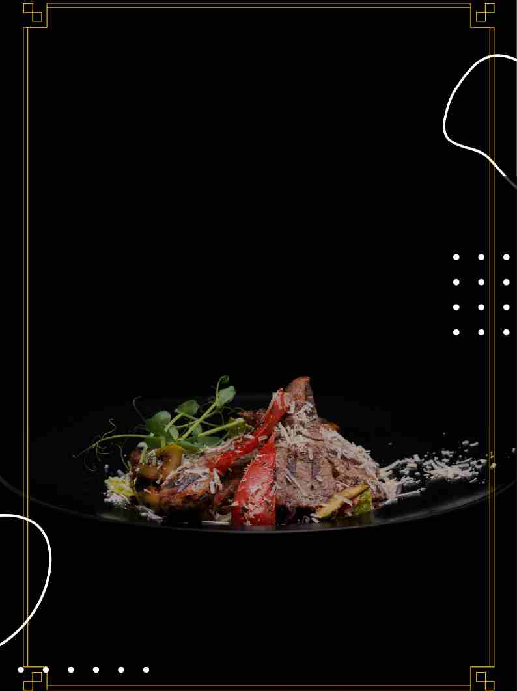
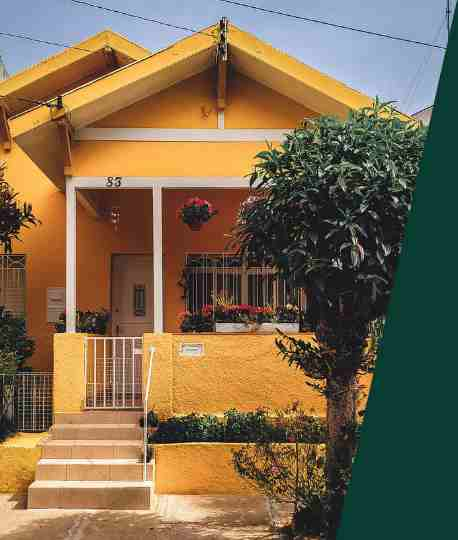

Food.
While drawing on various facets of local culinary traditions,
many South africans chefs are not afraid to push the envelope to prove
that South African cuisine is anything but static.
Small Businesses.
Small businesses across South Africa represent more than 98 percent of businesses,
employ between 50 and 60 percent of the country's workforce across all sectors,
and are responsible for a quarter of job growth in the privite sector.

Homes.
Similar to Los Angeles in sprawl and sunshine, Johannesburg is the Largest metropolitian
area in South Africa in terms of population, economy, and size. It is a heady mixture of business
buzz and laid-back poolside pleasure.
Business deals.
Easy to find business proposals and investment opportunities in South Africa
, Johannesburg is the place to be and the best place to connect with business entrepreneurs.
Work opportunities.
Great opportunities for growth and development. Easy to apply for jobs, very
responsive employers. 192 work from home Jobs in Johannesburg. Flexable work
opportunities.
Places.
You can commune with wildlife at a popular lion park; stroll among the beautiful gardens,
parks, and other attractions in Pretoria, the country's administrative capital;
and explore the UNESCO-listed Cradle of Humankind,
one of the richest paleoanthropological sites in the world.
Discover the best things to do with our list of the top attractions in Johannesburg.